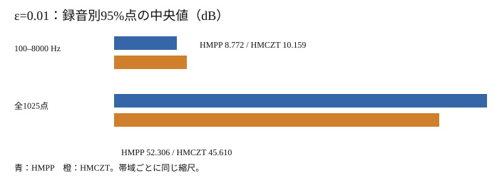

F0を固定したとき、微小な入力変化で声道振幅はどう動くか
現在の作業ベース Apron の標準HMPPと、調波解析をHMCZTへ替えた方式を、同じF0の条件で比べました。入力変化が元波形RMSの1%のとき、声道振幅VTMAGNの100–8000 Hzでは録音別95%点の中央値がHMPP 8.772 dB、HMCZT 10.159 dB。全1025点では52.306 dB、45.610 dBと大小が逆転します。帯域をまたいだ優劣や品質順位にはまとめられません。
比較は固定F0の同じ120録音に限ります。通常のApron全体の連続性や聴感品質を比べる実験ではありません。既公開のHMPP/HMCZT品質比較は別の測定条件による参考資料で、今回の近接特徴値を品質順位へ変換していません。
主帯域と全周波数点で大小が逆転した
各録音・符号で、基準F0が正の同じフレームと周波数点について無摂動との差の絶対値を取り、その95%点を計算しました。見出しの値は−方向120件と＋方向120件を合わせた240件の中央値です。先に120録音の正負を平均した値ではありません。HMCZT−HMPPの中央値差を、対応差の中央値とも呼びません。
| ε | HMPP 主帯域 | HMCZT 主帯域 | HMPP 全点 | HMCZT 全点 | 主帯域でHMCZTが大（−/＋） |
|---|---|---|---|---|---|
| 0.01 | 8.772 | 10.159 | 52.306 | 45.610 | 120/120・120/120 |
| 0.001 | 1.470 | 1.878 | 34.812 | 27.540 | 120/120・120/120 |
| 0.0001 | 0.148 | 0.195 | 15.179 | 8.898 | 119/120・119/120 |

符号別の対応はε0.01と0.001で各120/120録音、0.0001で各119/120録音が主帯域でHMCZT側の値が大きくなりました。全点には8 kHz超も含みます。元の16 kHz録音に由来する高域の音は弱く、24 kHzにした入力には摂動雑音も加わります。局所の小振幅点ではdB差が大きくなり得るため、全点と主帯域を同じ意味の尺度として扱えません。
固定したF0のフレームは全件対応した
英語40話者・120録音の元24 kHz入力を通常HMPPで一度解析し、得たrefined F0を共通に凍結しました。診断時はHMPP/HMCZTともf0_refine=0です。録音IDのSHA256先頭8 byteをlittle-endian整数にしたPCG64 seedで方向qを決め、平均を除いてunit RMSにしました。同じqに沿って x±ε×rms(x)×q を入力し、εは0.01、0.001、0.0001、各解析seedは0です。参照120解析と診断1680解析の計1800解析で、decodeと品質採点は0回です。
参照の正F0は73,987フレーム。6摂動×2方式の予定887,844対応フレームは主帯域・全1025点とも全件有効でした。全体SNRに直した名目40/60/80 dBは局所スペクトルSNRを表しません。Rdの完全一致が崩れたフレーム数も変化量ではなく、argminの跳びの件数とは解釈しません。声道振幅には主調波以外にLF源推定、正規化、log envelopeなどの経路も影響します。
今回の照合は保存個票からの再集計
元の1800解析は2026年10月23日01:30:55 UTCの保存前確認までに完了し、01:31:35 UTCに封印されました。公開用の個票再集計は同日03:10 UTCに作成しました。
保存元のsummaryは測定後の一時Pythonコマンドで作られ、一部総数が手書きでした。今回、保存された1440録音×方式×符号×εの個票から分母と集計を作り直しました。旧summaryとの差は照合した全項目で0件でしたが、この集計は公開時の新しい派生物です。元CloudはVTMAGN実配列1920束を監査したと記録しています。今回の受け渡しにはその配列がないため、配列値そのものを独立再現したとは言えません。録音別の公開用集計、来歴と照合件数を参照してください。
判断の範囲と次の課題
一録音につき一方向の有限な摂動であり、通常Apron全encoderの連続性、知覚品質、HMPPのピーク選択が差の原因であることは証明しません。音声を作るdecodeが0回なので新しい試聴音声はありません。自動MOSも品質研究ではないため実施していません。今後、原因を分けるならRd選択と主調波・声門源・正規化の変化を別々に固定した研究計画が必要です。今回の値から有意差、総合順位、方式採用は決めません。